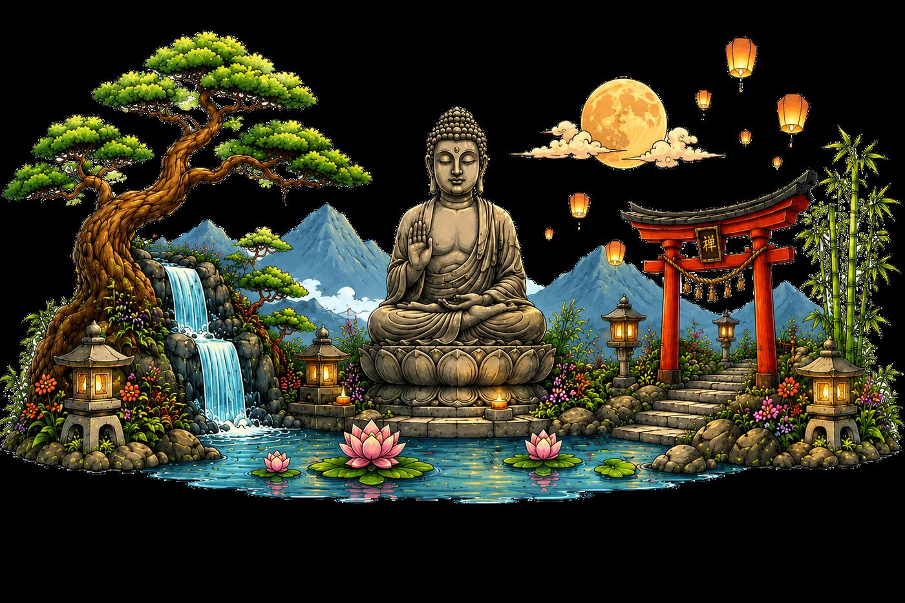

195+ guided meditations, 17 immersive worlds, a dragon companion and a journal of your evolution — without ever paying a thing.
To teach meditation and support your spiritual development. That's it. No hidden subscription, no ads, no account to create, no data collected: you open the app, and you breathe.

From first steps to the deepest explorations. Every category is its own universe: illustration, voice, atmosphere and tone.

Ten short sessions to build the fundamentals: posture, breath, attention.
10 meditations
Every meditation that plays without internet — breathwork, sleep, grounding, chakras + all the live meditations available in a place of your choice (forest, cave, mountain, temple, cosmos).
13 meditations
Short, fully-offline meditations — find calm, reset, or drift off in four minutes.
5 meditations
Lucid dreams, sleep, dream meaning.
3 meditations
Visit the lives that came before.
9 meditations
Meet the voices that walk with you.
13 meditations
Third eye, astral, symbolic worlds.
17 meditations
Breath, chakras, sound, nervous reset.
13 meditations
Travel beyond. Stars, void, the vast within.
9 meditations
Temples, forests, mountains, oceans, fire.
18 meditations
Meet what you've turned from, with care.
12 meditations
Reunions, transgenerational memory, access to the records: the journey toward what lies beyond us.
5 meditations
Journeys to the lower, upper, and middle worlds. Power animal, spirit of place, Celtic cauldron.
6 meditations
Soothe anxiety, tension, mental agitation, and rest deeper.
10 meditations
Love, gratitude, compassion, forgiveness — cultivate the inner heart.
10 meditations
Meet fear with expert techniques: RAIN, somatic pendulation, self-compassion, cognitive defusion.
8 meditationsThree categories dedicated to trance techniques, micro-detachment and astral journeys — for explorers.
5 preparatory exercises based on Ericksonian hypnosis, Monroe's fractional relaxation, and progressive visualization: trance descent, fractional induction, mental screen, subtle senses, layered visualization.
5 meditations8 micro-gestures of separation to practice BEFORE any full exit: pull out just a phantom hand, be tugged by an imaginary magnet, slide down a mental toboggan, misalign yourself by 2 centimeters. Ideal for beginners who freeze.
8 meditations10 classic techniques (rope, roll, rotation, vortex...) + 11 advanced protocols (double, target, mirror, mapping, first-meters protocol). Each session ends silently — you stay in the state.
21 meditationsA world is a complete journey (4, 10 or 20 minutes) with its scenery, light, sounds and story. You choose where to enter.

A sacred temple hidden high in misty mountains.

A divine temple floating beyond reality, above the stars.

An endless glowing crystal world deep underground.

Float peacefully through deep cosmic space.

A hidden world deep inside the Earth.

An ancient alien sanctuary beneath the Antarctic ice.

A peaceful tropical island floating above the clouds.

A traditional Japanese garden of perfect calm.

A lost underwater civilization of deep serenity.

A sacred monastery high in the mountains at dawn.

An infinite library floating beyond reality.

A mystical oasis beneath a star-filled desert sky.

A vast sacred tree connected to all of life.

An ancient lost city reclaimed by the jungle.

A surreal, glowing forest of dreams.

A reflective realm of infinite awareness.

A moonlit forest guarded by ancient wolf spirits.
Before some meditations you choose the scenery the voice takes you through. The session's theme is woven into the sensations of the place.

Roots, moss, hidden path

Descent into the unseen

Clear air, wide view

Incense, threshold, stillness

Weightless, vast, alive
Beyond meditations, the app slowly becomes your inner logbook.
Create your inner places — forest, cave, temple, island… — and come back to meditate there.
Record the guides you meet in meditation: their type, their messages, their reappearances.
The objects received on inner journeys, kept and described, with their meaning for you.
A structured personal journal: dreams, gratitude, emotions, signs… plus a history of every meditation with your impressions.
Your companion grows with your practice (11 stages) and its island evolves with it — rock, meadow, tree, waterfall, crystal, temple, cosmos.
Stamps to collect: meditations, worlds, guides, streaks, consistency badges.
A daily tip adapted to the hour, your regularity and your personal program from the welcome questionnaire.
1 meditation = 1 point, 1 entry = 1 point. Half of every category is free from day one; everything is open at 30 points.
Find a meditation by keyword — sleep, stress, confidence, inner child, chakra…
A gentle reminder every day or on chosen days, at the time you want.
Six steps from 0.75× to 1×, pitch preserved. Plus a personal rhythm for the pauses between sentences.
Rain, forest, singing bowl… a soundscape during the session, at your volume.
An illustrated beginner library: posture, breath, attention, with diagrams in your language.
Download your meditations and worlds: they play without network, forever.
A few minutes to see the app in action.
Free on the App Store and Google Play. No sign-up, no subscription: you install, and you breathe.
Awakening Minds is a learning and well-being tool. It is not medical advice, a diagnosis or a treatment, and never replaces the support of a qualified professional.